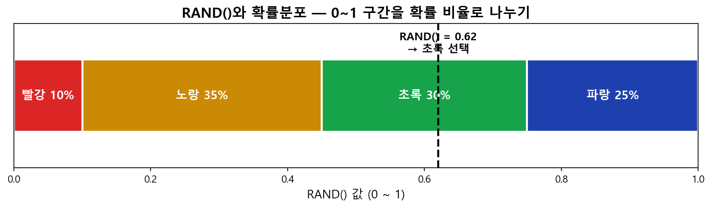
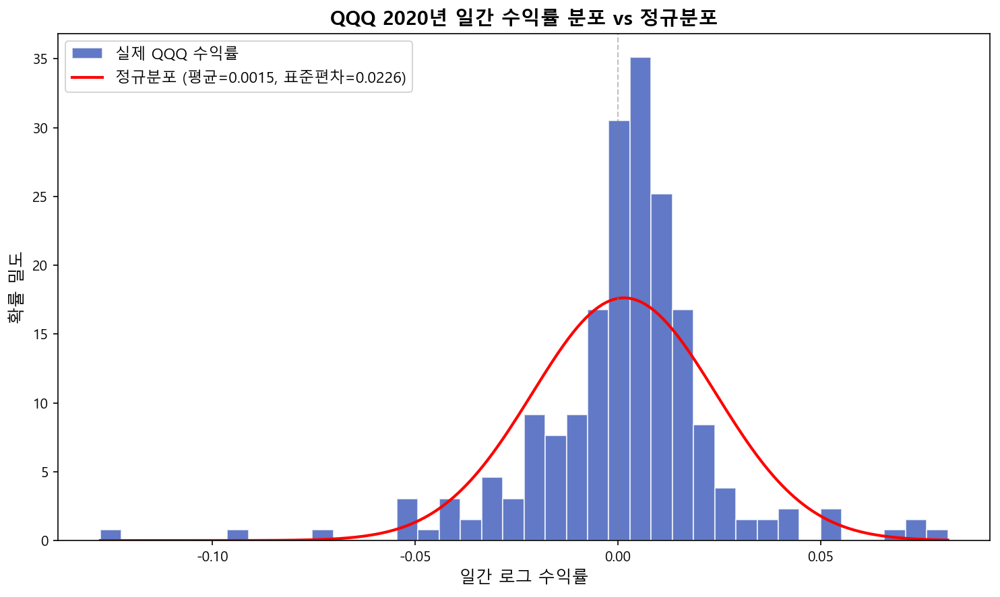
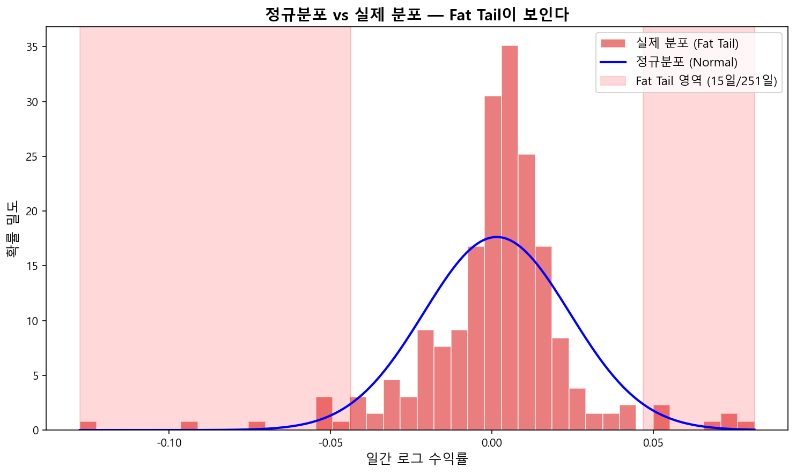
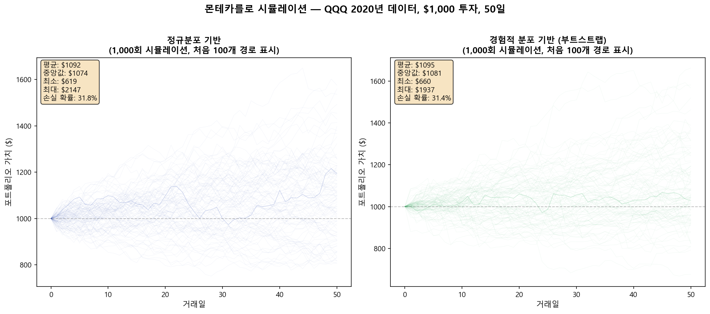
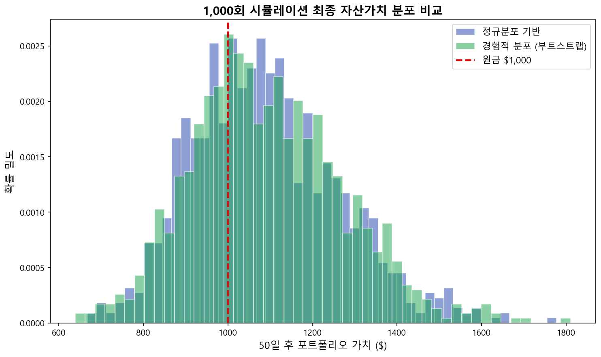

몬테카를로(Monte Carlo) 시뮬레이션 백테스팅¶
구글 시트 링크: MonteCarlo (시뮬레이션 데이터 때문에 무거운 파일입니다)
몬테카를로 시뮬레이션이란¶
몬테카를로 방법(Monte Carlo method)은 난수를 이용하여 함수의 값을 확률적으로 계산하는 알고리즘입니다. 스타니스와프 울람이 모나코의 유명한 도박의 도시 몬테카를로의 이름을 본따 명명하였으며, 1930년대 엔리코 페르미가 중성자의 특성을 연구하기 위해 이 방법을 사용한 것으로 유명합니다. 맨해튼 계획의 시뮬레이션이나 수소폭탄의 개발에서도 핵심적인 역할을 담당했습니다.
금융 공학이나 증권사에서도 몬테카를로 시뮬레이션으로 투자 모델을 백테스팅(backtesting — 과거 데이터로 전략을 검증하는 것)한다는 이야기를 자주 들을 수 있습니다. 어려워 보이지만 핵심은 단순합니다. "Hello World" 프로그램처럼 직접 만들어보면서 이해해봅시다.
2020년의 QQQ 주가 데이터를 사용하여, 투자 금액 $1,000을 50일 동안 투자하는 경우를 몬테카를로 시뮬레이션으로 1,000번 반복하여 백테스팅해보자.
기본 개념: RAND() 함수¶
RAND() 함수는 호출할 때마다 0에서 1 사이의 임의의 실수를 동등한 확률로 돌려주는 함수입니다. 즉, 모든 값이 같은 확률로 나오는 균등분포(Uniform Distribution)를 따릅니다.
RAND()를 10번 실행하면 균등분포가 아닌 것처럼 보이지만, 시행 횟수를 늘리면 결과가 이론적 확률에 가까워진다는 대수의 법칙(Law of Large Numbers)에 따라 반복 횟수를 100회, 1,000회, 10,000회로 늘리면 점점 균등분포에 수렴합니다.
확률분포(Probability Distribution) 함수 만들기¶
크리스마스 카드 판매량의 지난 10년 기록에 따르면:
| 판매량 | 확률 | 색상 |
|---|---|---|
| 10,000장 | 10% | 빨강 |
| 20,000장 | 35% | 노랑 |
| 40,000장 | 30% | 초록 |
| 60,000장 | 25% | 파랑 |
이 확률에 따라 판매 수량을 무작위로 생성하려면, 확률 길이에 해당하는 막대기를 나란히 나열합니다.

RAND()가 돌려주는 0~1 사이의 숫자를 막대기에 매핑하면, 각 색상(판매량)이 해당 확률대로 선택됩니다. 경계값은:
| 경계 | 값 |
|---|---|
| 빨강/노랑 | 0.10 |
| 노랑/초록 | 0.45 (0.10 + 0.35) |
| 초록/파랑 | 0.75 (0.10 + 0.35 + 0.30) |
RAND()가 0~1 사이의 숫자를 던지면, 그 숫자가 어느 막대기 구간에 떨어지느냐로 판매량을 결정합니다. 이 표를 확률에서 값으로 바꿔주는 변환표(누적분포 역함수, Inverse Cumulative Distribution)라고 부르며, VLOOKUP()으로 매핑합니다:
=VLOOKUP(RAND(), '누적분포 역함수 표', 2)
크리스마스 카드 몬테카를로 시뮬레이션¶
판매 가격, 제작 비용, 처분 비용이 주어졌을 때 손익 계산:
공급(Produced) = 40,000
수요(Demand) = VLOOKUP(RAND(), '누적분포 역함수 표', 2)
매출(Revenue) = 판매가격 x MIN(공급, 수요)
총제작비용 = 제작비용 x 공급
총처분비용 = 처분비용 x IF(공급 > 수요, 공급 - 수요, 0)
손익(Profit) = 매출 - 총제작비용 - 총처분비용
매번 RAND()를 호출할 때마다 수요가 변하고 손익이 자동 계산됩니다.
구글 시트에서의 문제¶
한 줄 계산식에서 RAND()를 여러 번 호출하면 각각 다른 값을 반환합니다. 이 문제를 해결하기 위해 커스텀 함수를 작성합니다:
구글 시트 커스텀 함수 코드
function GetProfit(produced, demandTable, unit_sale, unit_cost, unit_disposal) {
var demand = getVLOOKUP(Math.random(), demandTable, 2);
var revenue = unit_sale * Math.min(produced, demand);
var production_cost = unit_cost * produced;
var disposal_cost = unit_disposal * (produced > demand ? produced - demand : 0);
return revenue - production_cost - disposal_cost;
}
function getVLOOKUP(search_key, range, index) {
var found = 0;
for (var i in range) {
if (search_key < range[i][0]) break;
found = i;
}
return range[found][index - 1];
}
호출: =GetProfit(공급, 누적분포역함수표, 판매가격, 제작비용, 처리비용)
공급량을 10,000 / 20,000 / 40,000 / 60,000장으로 각각 500번 시뮬레이션한 결과, 60,000장은 유리한 점이 없고, 안정적인 수입을 원하면 20,000장이 최적이라는 결론을 얻습니다.
정규분포와 역누적분포함수¶
다양한 확률분포 함수 중 가장 유명한 것이 정규분포(Normal Distribution) — 평균을 중심으로 종 모양으로 분포하는 형태입니다.
평균 IQ = 100, 표준편차(평균에서 데이터가 얼마나 퍼져 있는지를 나타내는 수치) = 15인 경우:
| 질문 | 함수 | 답 |
|---|---|---|
| IQ 120 이상일 확률은? | =1-NORM.DIST(120,100,15,true) |
9.12% |
| 하위 40%의 IQ 기준은? | =NORM.INV(0.4,100,15) |
96.2 |
| IQ 96.2 미만일 확률은? | =NORM.DIST(96.2,100,15,true) |
40% |
핵심: RAND()가 0~1 사이 확률을 던지면, 역누적분포함수가 '그 확률에 해당하는 실제 값'을 알려줍니다. 이렇게 하면 원하는 확률분포를 따르는 임의의 변수를 생성할 수 있습니다.
정규분포 임의 변수 = NORMINV(RAND(), mean, stdev)
로그정규분포 임의 변수 = LOGINV(RAND(), mean_of_ln, stdev_of_ln)
LOGINV() 파라미터 주의사항
`LOGINV()`의 파라미터는 로그정규분포(주가처럼 0 이하로 떨어지지 않는 데이터에 적합한 분포) 자체의 평균/표준편차가 아니라, **기저 정규분포(ln(X))의 평균과 표준편차**입니다.QQQ 2020년 수익률 분석¶
QQQ의 2020년 일간 종가 데이터(252 거래일, 종가 간 변화율이므로 251개 수익률)를 사용합니다.

정규분포(NORMINV)로 생성한 임의의 수익률과 실제 수익률을 비교하면, 실제 분포에서 보이는 Fat Tail(팻 테일 — 정규분포가 예측하는 것보다 극단적 사건이 더 자주 발생하는 현상)이 정규분포 모델에서는 사라집니다. 2020년 코로나 폭락 같은 사건이 정규분포로는 수천 년에 한 번 있을 일이지만, 실제로는 10년에 한 번꼴로 발생합니다.

실제 데이터 분포(경험적 분포, Empirical Distribution)로 Fat Tail 보존¶
실제 수익률 251개를 직접 샘플링하면 Fat Tail을 보존할 수 있습니다:
=INDEX(ROR_QQQ2020, RANDBETWEEN(1, 251))
1~251 사이의 임의의 정수를 생성하여 해당 수익률을 사용하는 실제 데이터 재추출 방법(부트스트랩, Bootstrap)입니다.
몬테카를로 시뮬레이션 결과¶
$1,000을 50일간 투자하는 시뮬레이션을 1,000번 반복합니다.


시뮬레이션이 알려주는 것¶
1,000번 시뮬레이션의 결과를 정리하면 (경험적 분포 기반):
| 지표 | 값 | 의미 |
|---|---|---|
| 중앙값 (50th) | $1,074 | 절반의 경우 50일 후 약 7.4% 수익 |
| 5th percentile (VaR 95%) | $844 | 최악의 5% 시나리오에서 -15.6% 손실 |
| 95th percentile | $1,399 | 최선의 5% 시나리오에서 +39.9% 수익 |
| 손실 확률 (< $1,000) | 30.8% | 10번 중 3번은 원금 손실 |
| 최대 경로 낙폭 (worst) | -40.3% | 투자 중간에 가장 많이 빠진 순간 — 계좌를 열어봤을 때 가장 심장이 철렁하는 순간 |
(경험적 분포 부트스트랩, seed=42, 1,000회 시뮬레이션 결과)
핵심: 몬테카를로 시뮬레이션의 가치는 "평균 수익률"이 아니라 "최악의 시나리오에서 얼마나 잃을 수 있는가"를 미리 알 수 있다는 것입니다. 내 돈 1,000달러를 넣었을 때 운이 정말 나쁘면(하위 5%) 얼마까지 줄어들 수 있는가 — 이것이 VaR(Value at Risk)이며, 금융 기관이 리스크 관리에 몬테카를로를 사용하는 핵심 이유입니다.
파이썬 버전¶
구글 시트의 제약(차트 99개 시리즈 한계, 느린 속도) 없이 파이썬으로 동일한 시뮬레이션을 실행할 수 있습니다:
파이썬 전체 코드
import numpy as np
import yfinance as yf
# QQQ 2020년 데이터 다운로드
qqq = yf.download("QQQ", start="2020-01-01", end="2020-12-31")
closes = qqq["Close"].values.flatten()
log_returns = np.diff(np.log(closes)) # 251개 일간 로그 수익률
mu, sigma = log_returns.mean(), log_returns.std()
# 방법 1: 정규분포 기반
random_returns = np.random.normal(mu, sigma, size=(1000, 50))
# 방법 2: 경험적 분포 (부트스트랩) — Fat Tail 보존
random_returns = np.random.choice(log_returns, size=(1000, 50), replace=True)
# 시뮬레이션 경로 계산
paths = 1000 * np.exp(np.cumsum(random_returns, axis=1))
마무리¶
몬테카를로 시뮬레이션의 핵심:
RAND()로 균등분포 난수 생성 → 확률분포 함수에 매핑- 역누적분포함수(Inverse CDF) +
RAND()= 원하는 분포를 따르는 임의의 변수 - 정규분포 기반:
NORMINV(RAND(), mean, stdev)— 깔끔하지만 Fat Tail이 사라짐 - 경험적 분포(부트스트랩):
INDEX(실제데이터, RANDBETWEEN())— Fat Tail 보존 - 충분히 많이 반복하면 대수의 법칙에 의해 통계적 확률에 수렴
금융 실전에서는 경험적 분포에 추가 파라미터(변동성 클러스터링, 점프 모델 등)를 결합하여 더 정교한 시뮬레이션을 수행합니다. 하지만 원리는 여기서 다룬 "Hello World"와 정확히 같습니다.